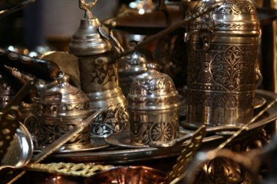
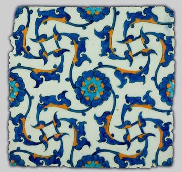
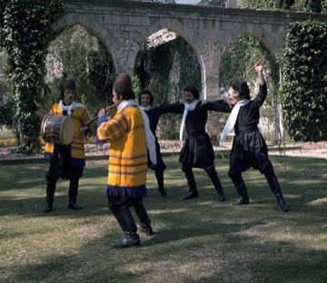
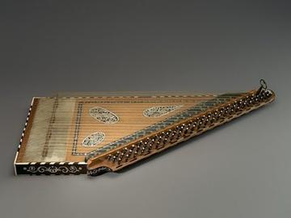

Home / Living Traditions / Mesopotamia, Levant and Arabia
Encyclopedia ID 251
Turkish coffee in the cezve
Also known as Türk kahvesi

.jpg){kind=link}
Add water, sugar and finely ground coffee to a copper cezve and lift it from the sand or flame just as the foam rises, twice, without boiling over.
Heritage note
Part of the living heritage of Turkey. Some forms of this practice carry deep meaning for the communities who keep it; here we describe the play and the craft only, with respect for its roots.
Origins
A living tradition passed from person to person; it is not tied to a single dated origin. It belongs to the cultural world of Mesopotamia, Levant and Arabia.
Sources
Related entries

Ebru paper marbling
Turkey · Crafts and making
Iznik tile painting
Turkey · Crafts and making
Dabke line dance
Lebanon · Dances
Tatreez Palestinian Cross-Stitch
Palestine +1 · Crafts and making
Jordanian Sand Bottle Art
Jordan · Crafts and making
Mijwiz Double Clarinet
Lebanon +3 · Musical instruments
More from Turkey

Blind Man's Buff
Turkey +1 · Street and playground games
Cirit
Turkey · Dexterity and skill games
Oil wrestling
Turkey · Wrestling and martial sports
Persian Carpet Knotting
Iran +1 · Crafts and making
Portolan Chart Navigator
Italy +2 · Puzzles and mind games
Qanun
Turkey +2 · Musical instruments